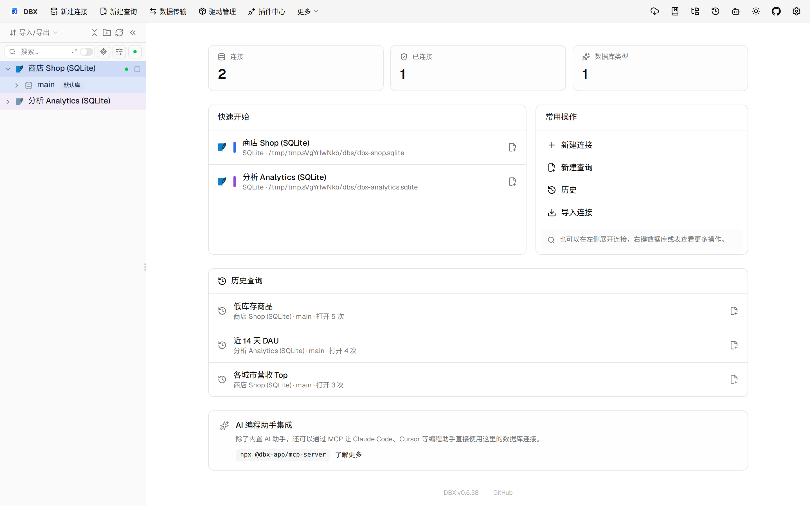
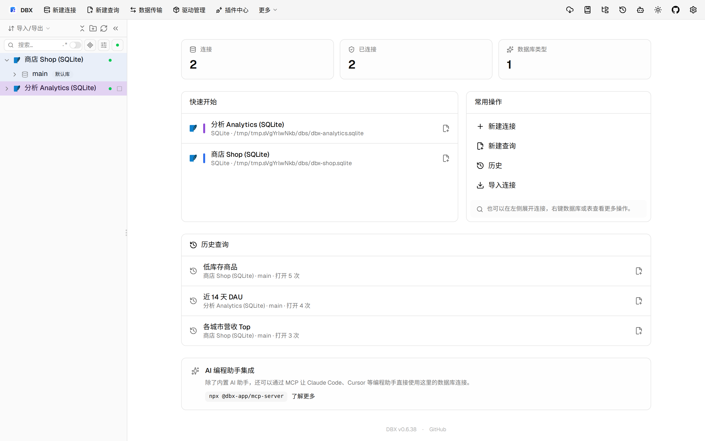
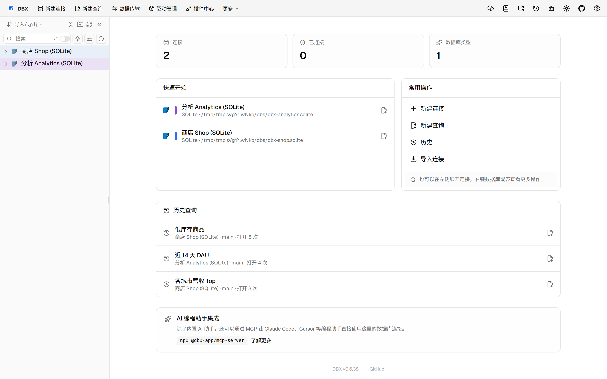
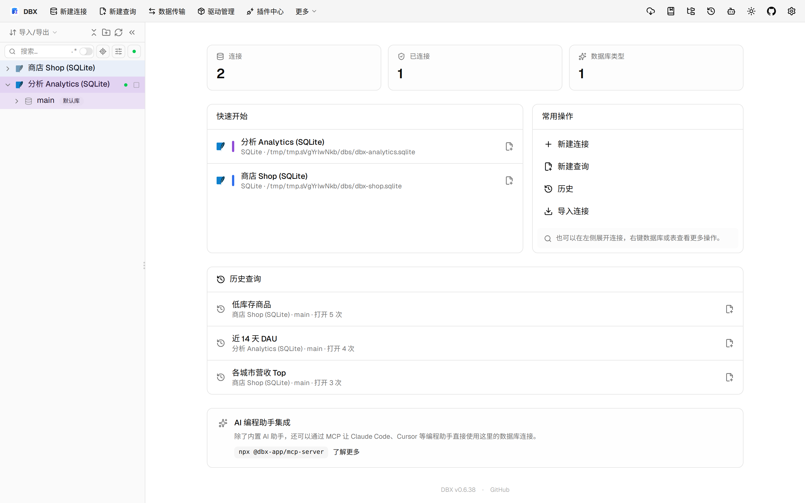

#11562 界面预览
commit 44f8640 · 回到 PR · 这次改动把 Oracle / OceanBase Oracle 的类型（TYPE/TYPE BODY）纳入对象浏览、源码查看和 Schema Diff 流程，并在比较/部署界面补充了类型元数据、依赖与阻断原因展示。部署结果页也新增了针对 Oracle routine 的校验/回读信息，执行前会更严格地阻止不完整或不安全的计划。
⚠️ 这次录制有 10 步没能按计划执行；带 ⚠️ 的截图拍摄于步骤失败之后，画面未必是说明文字所描述的状态。
红线是鼠标走过的轨迹，红色圆环是一次点击；底部文字是这一步在做什么。多个场景各自从应用初始状态开始。空格暂停，← → 逐段查看。

⚠️ 类型对象浏览 · 打开表后的数据网格

⚠️ 类型对象浏览 · 打开分析库事件表后的数据网格

⚠️ Schema Diff 中的 Oracle 类型提示 · Schema Diff 入口与 Oracle 类型提示位置；当前沙盒没有 Oracle 数据源，无法进入真实比较页面
 ⚠️ 对象源码里的类型元数据面板 · 对象页面的常规状态
⚠️ 对象源码里的类型元数据面板 · 对象页面的常规状态

⚠️ 对象源码里的类型元数据面板 · Oracle 类型元数据面板的位置；当前沙盒没有 TYPE/TYPE BODY 对象，无法展示实际内容